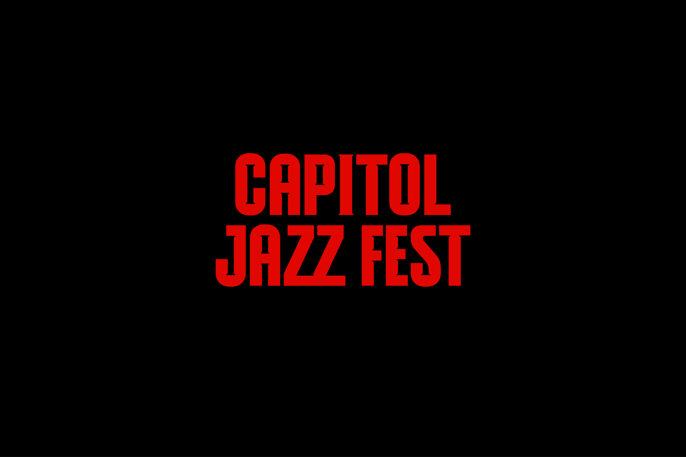
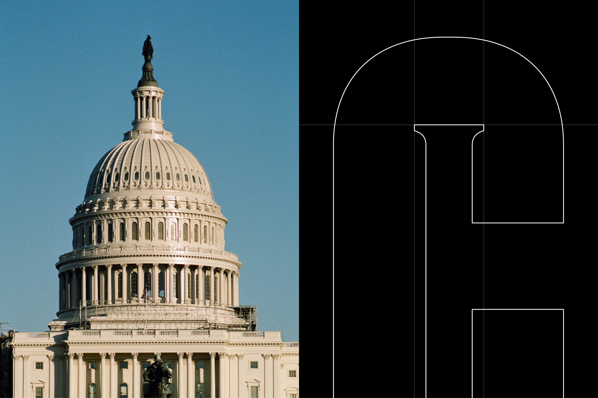
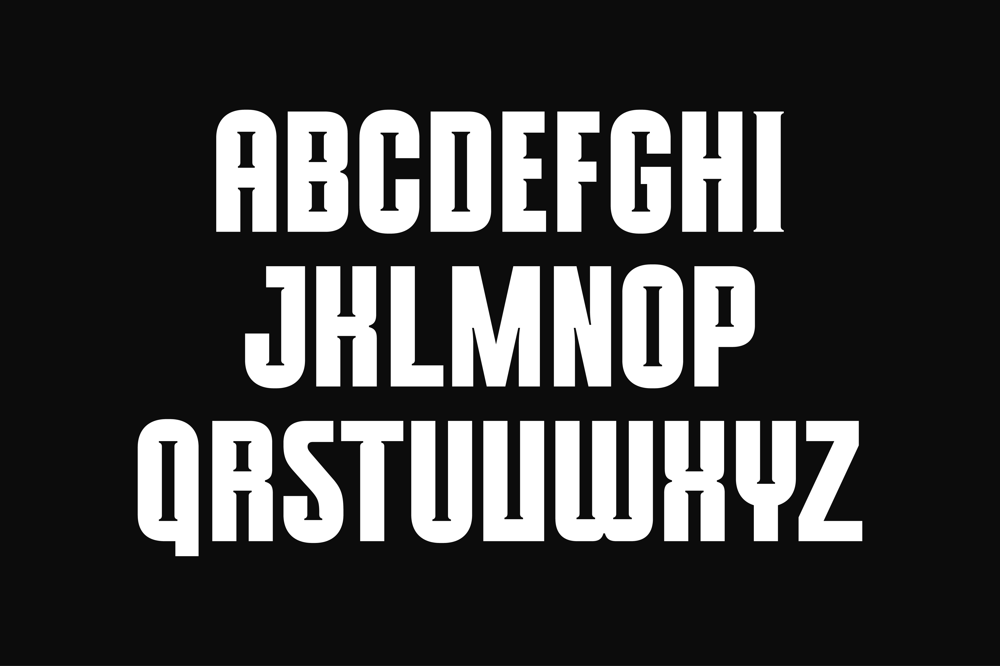
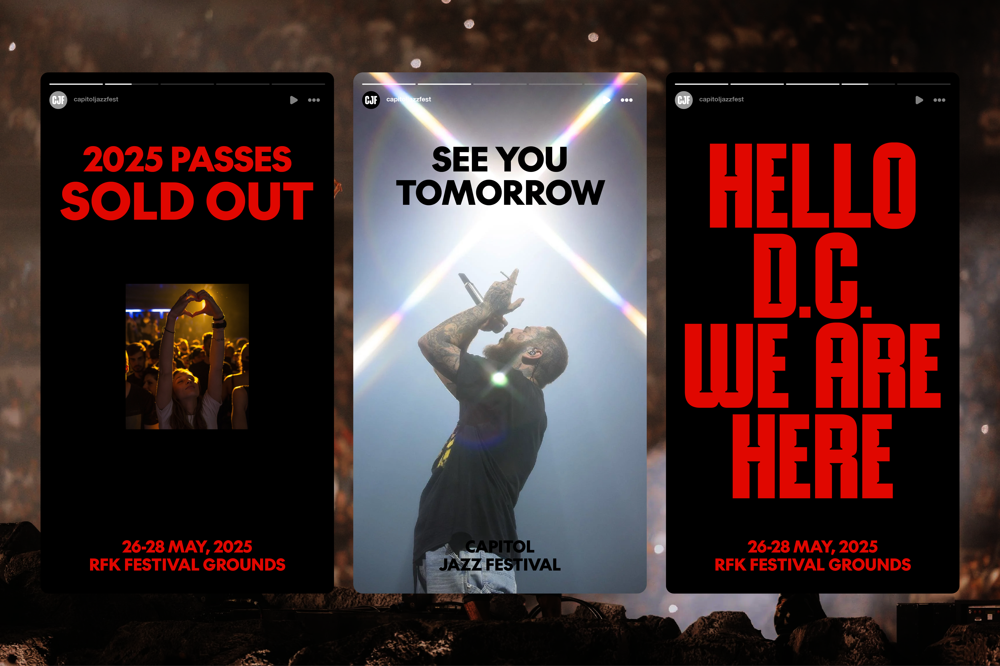
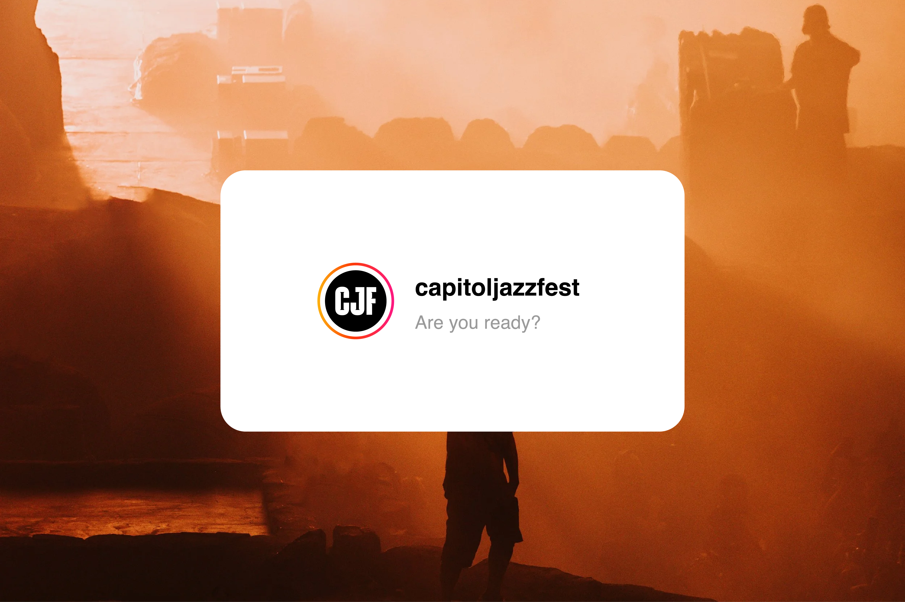

2025-2026
Capitol Jazz Festival
The Capitol Jazz Festival is a virtual festival that combines the Seoul Jazz Festival with the atmosphere of Washington, D.C. This project aims to effectively promote the brand within a short period. It focuses on maintaining design consistency while allowing for quick production and application. Additionally, it incorporates bold design elements to create a strong first impression. Held in Washington, D.C., the festival’s visual identity draws inspiration from the United States Capitol. It’s architectural elements, especially the columns, were reinterpreted to create a custom typeface for the event. All capital letters were designed based on a grid created specifically for this festival.







2024
The Big Questions
THE BIG QUESTIONS is a conference hosted by TEDxSeoul. Thanks to advancements in technology, including AI,we are living in an era of both challenges and opportunities. This event explores “big questions” profound inquiries that challenge existing values and perspectives and discusses how they may evolve in the future. Additionally, we reassess and interpret these changes to prepare for the society of tomorrow. I was responsible for the logo design of the third section, ‘Humanizing Our Society,’ as well as the slides, sponsor pop-ups, and event planning. I believed that a hug best represents humanity and created a logo where the word “BIG” embraces itself. Additionally, I applied a hugging motion to the logo to evoke a warmer and more heartfelt feeling for the audience.


2024
Art Exhibition
This art exhibition was organized by Kid_id, a design agency based in Stockholm, Sweden. Each participant contributed one piece of artwork under the shared theme of Naivism, emphasizing the idea that everyone can be an artist. All artworks were sold to raise funds, and 100% of the proceeds were donated to UNICEF Sweden.
Naïvism refers to artworks created by self-taught individuals or a style that intentionally embraces pure and simple expression. I aimed to create a poster that fits this theme. I illustrated office items and dogs in a naïve art style, and incorporated the participants’ names in handwritten text as part of the background.


2024
LO
LO (Landsorganisationen i Sverige) is Sweden’s largest trade union federation, founded in 1898. It represents workers across various industries and service sectors, advocating for their rights and aiming to improve wages, working conditions, and job security. The organization consists of about 14 individual trade unions that collaborate to negotiate better terms with employers and influence government labor policies.


2024
Brustna hjärtan
Brustna hjärtan is a campaign project created in collaboration with Svenska kyrkan, the Church of Sweden. It aims to provide emotional comfort to individuals experiencing grief, loss, loneliness, and heartbreak. The project emerged from a social context in which the presence of the church among young adults has been declining, while mental health issues continue to rise.
In response, the project repositions Svenska kyrkan in a more authentic and warm light, proposing a visual language that emotionally resonates with younger generations. The logo focuses on expressing the delicacy of sorrow that comes with farewell, using handwritten typography to convey a personal and human touch. A restrained composition combined with elements of light establishes a tone and manner that harmoniously bridges the church’s traditional values with a contemporary sensibility.